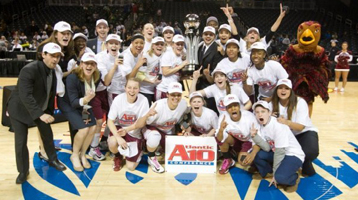
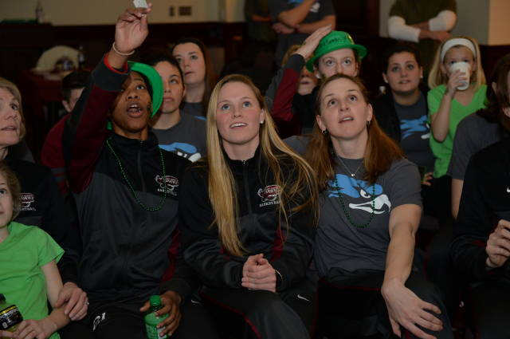

Susan Moran
2013 A10 Champions
2014 NCAA watch party
With Saint Josephs not having a football the University takes its basketball program very serious. SJU Womens Baksetball program has a long history of excellence. For two consecutive years (2013, 2014) the hawks have earned a NCAA tournament birth. In 2013 the hawks won the A10 conference championship at the Barclays Center in New York. They went on to face Vanderbilt in the NCAA tournament and sadly lost first round. In 2014 the hawks earned a bid to the NCAA and beat Georgia in the first round. Second round they played UCONN which resulted in a lost. SJU Womens has a long list of accolades and great achievements, here is a few important facts